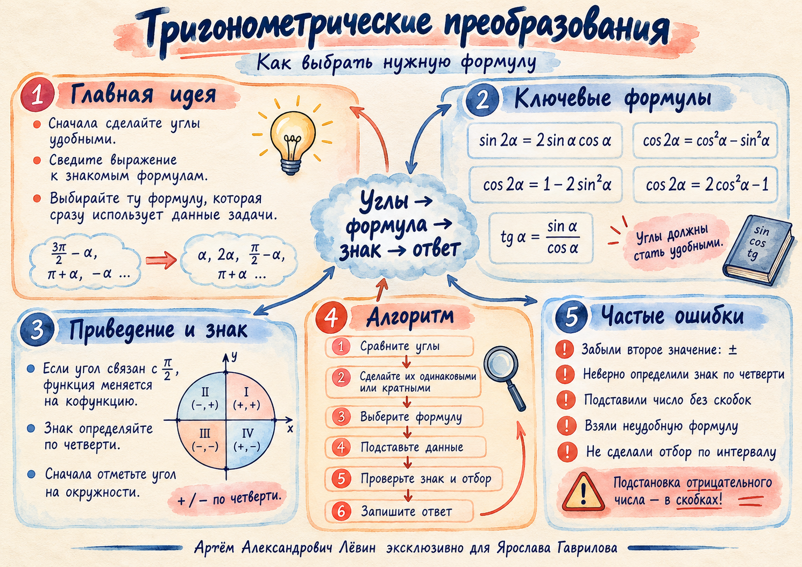

sin 2α = 2 sin α cos α
Сворачивайте и разворачивайте в обе стороны.
Занятие · 05 октября 2026
Тригонометрические преобразования становятся короче, когда Вы сначала приводите углы к удобному виду, затем выбираете формулу под данные задачи и только после этого считаете.

Опорный набор
На занятии ключевым было не механическое перебирание формул, а выбор той записи, которая сразу содержит известную величину. Если дан sin α, удобная форма cos 2α уже содержит sin² α.
Сворачивайте и разворачивайте в обе стороны.
Базовая форма, когда известны обе функции.
Предпочтительна, когда дан sin α.
Предпочтительна, когда дан cos α.
Позволяет заменить число 1 тригонометрическим выражением.
Если нужно получить tg² α, ищите отношение sin² α к cos² α.
Исследуйте выбор
Выберите ситуацию. Под ней появится короткая логика выбора — ровно та, которую отрабатывали на занятии.
Формулы приведения
Для углов, связанных с π/2, функция меняется на кофункцию. Знак проверяйте по исходной функции в той четверти, куда попал угол. Нажмите на четверть, чтобы быстро повторить знаки.
Текущая четверть
Все три функции положительны.
Пример из занятия: sin(7π/2 − α) = −cos α. Внешний минус сохраняется до конца вычисления.
Рабочий маршрут
Полезный приём из занятия: если в равенстве все слагаемые содержат sin² α и cos² α, а отдельно стоит число, попробуйте заменить это число через 1 = sin² α + cos² α. Так появляется возможность получить отношение sin² α / cos² α и перейти к tg² α.
Проверка перед ответом
После извлечения квадратного корня сначала фиксируйте ±, затем выполняйте отбор.
В формуле приведения знак определяется по исходной функции и четверти.
При отрицательном значении пишите, например, (−0,4)². Скобки сохраняют знак подстановки.
Если дан sin α, нет смысла сначала искать cos α для вычисления cos 2α.
Перед делением на sin α или cos α проверьте, что соответствующее выражение не равно нулю.
Интервал или четверть могут оставить только одно из двух алгебраически возможных значений.
Путь В · 5 + 3 · 2 дня
Сначала 5 коротких заданий на воспроизведение формул без подсказки. Затем 3 полноценные задачи на применение. Отмечайте выполненное — состояние сохранится в браузере.
Выполнено 0 из 16
Без подсматривания. Сверка — только после попытки.
Выбор формулы, вычисление, знак и проверка.
Повтор с изменённым порядком и формулами приведения.
Приведение, интервал и рациональная подстановка.